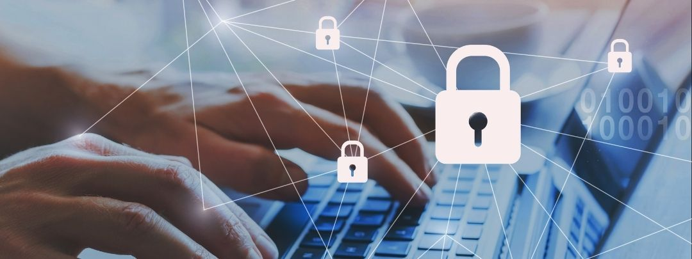

Scienza
La parola informatica e composta da informazioni-automatica,ed essa studia l’evoluzione dei dispositivi e la loro elaborazione,
l'informatica si occupa dei dati elettronici e della loro informazione. La prima rivoluzione industriale iniziò nel 1760
ci fu la prima invenzione di una macchina a vapore e di altre tecnologie tessili e metallurgiche,dopo che fu inventata l'elettricità
ci fu la seconda rivoluzione industriale e fu inventata la lampadina e il motore a scoppio nella terza rivoluzione industriale ci furono
le prime fonti di energia rinnovabile che iniziò nel 1950,mentre
la quarta rivoluzione industriale iniziata nel 2016 fino ai giorni nostri venne inventata la robotica e i dispositivi connessi.
Storia
 I dispositivi elettronici si sono evoluti nel corso dei anni il primo dispositivo elettronico era una calcolatrice meccanica
nel 1940 mentre il primo computer che fu rilasciato fu nel 1981 il ibm 5150 che si e evoluto fino ai pc dei giorni d’oggi.la prima calcolaLa trice fu creata nel 1623
da uno scienziato tedesco ma poi abbandonò il progetto dopo che il prototipo e stato distrutto da un incendinel 1624
I dispositivi elettronici si sono evoluti nel corso dei anni il primo dispositivo elettronico era una calcolatrice meccanica
nel 1940 mentre il primo computer che fu rilasciato fu nel 1981 il ibm 5150 che si e evoluto fino ai pc dei giorni d’oggi.la prima calcolaLa trice fu creata nel 1623
da uno scienziato tedesco ma poi abbandonò il progetto dopo che il prototipo e stato distrutto da un incendinel 1624